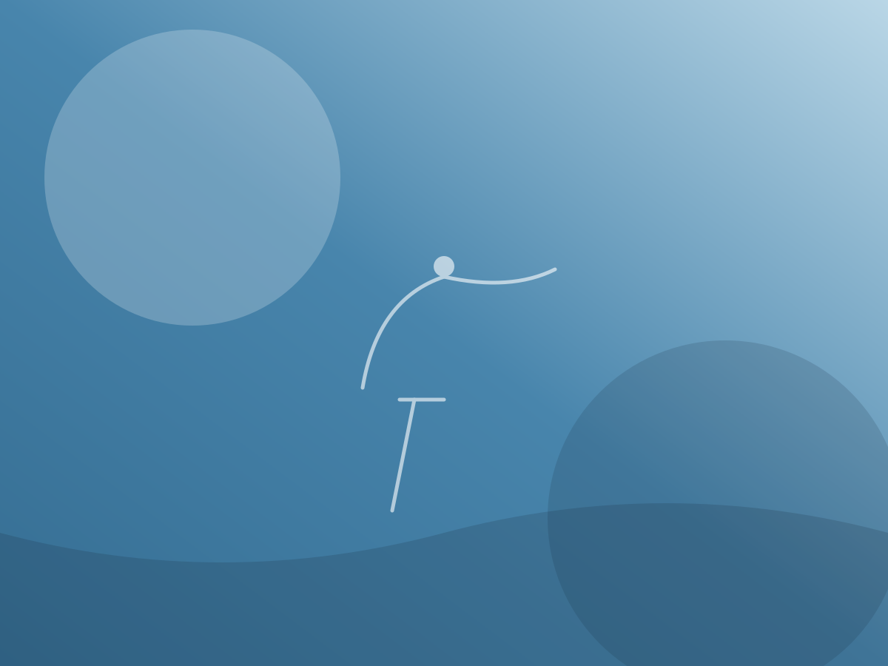

Pain at night
A deep ache that worsens when lying down or rolling onto the shoulder, often disrupting sleep.
From precise diagnosis to a guided return to full movement, we treat every shoulder condition with proven, non-surgical-first care — calm, expert, and built entirely around you.

The shoulder is the most mobile joint in the body. That extraordinary range — letting you reach overhead, behind your back and across your body — comes from a shallow ball-and-socket design held together almost entirely by soft tissue: tendons, ligaments and the muscles of the rotator cuff.
It is precisely that mobility that makes the shoulder prone to injury. When a tendon is overloaded, a movement pattern drifts off course, or the joint takes a sudden knock, pain and stiffness can follow quickly. The encouraging news is that the vast majority of shoulder problems respond well to a structured, evidence-based rehabilitation plan — usually without surgery.
Below you will find the symptoms we see most often, the common underlying causes, how we reach a clear diagnosis, and the treatment options we use to get you moving freely again.
Shoulder problems rarely announce themselves all at once. If any of these feel familiar, an assessment can pinpoint what is happening and how to put it right.
A deep ache that worsens when lying down or rolling onto the shoulder, often disrupting sleep.
Difficulty raising the arm overhead, reaching behind your back, or fastening clothing.
The arm feels unreliable or gives way under load, from carrying bags to lifting overhead.
A click, grind or sense of the joint snagging as you move through certain positions.
A joint that feels tight and slow to warm up, gradually losing freedom of movement.
A feeling that the shoulder may slip or pop out, especially with overhead or twisting movements.
Most shoulder pain traces back to one of a handful of patterns. Understanding the cause is the first step to treating it properly.
Clear answers come first. We combine hands-on expertise with modern imaging so your treatment is built on a precise diagnosis — often within a single visit.
A thorough, unhurried examination of strength, range, stability and specific movement tests.
On-site dynamic ultrasound lets us see tendons and the bursa move in real time, right in the room.
When deeper detail is needed, we arrange and interpret MRI scans to map soft-tissue damage precisely.
We study how your shoulder and shoulder blade coordinate, revealing the patterns driving your pain.
Every plan is tailored to your diagnosis and your goals, drawing on the right combination of these approaches at each stage of recovery.
Graded, progressive loading that rebuilds strength, control and range of motion — the cornerstone of lasting recovery.
Book this treatmentHands-on mobilisation and soft-tissue techniques to ease stiffness, settle pain and restore smooth movement.
Book this treatmentTargeted shockwave and regenerative therapies to stimulate healing in stubborn, persistent tendon problems.
Book this treatmentWhen appropriate, carefully considered, image-guided injections to calm inflammation and create a window for rehab.
Book this treatmentStructured, stage-by-stage recovery after an operation, rebuilding range, strength and trust in the joint.
Book this treatmentConservative, targeted strategies to bring persistent pain under control so you can move and progress again.
Book this treatmentA clear, supported journey — so you always know what comes next and why.
We listen to your history and goals in an unhurried first visit.
Hands-on testing and imaging pinpoint the true source of pain.
A plan combining therapy, guidance and clear milestones.
Progressive loading rebuilds strength, control and confidence.
A lasting return to the movement and activities you love.
Every shoulder is different, but most recoveries follow a reassuringly predictable shape. Here is what patients typically experience.
Recovery is rarely perfectly linear. Your specialist reviews progress at every visit and adjusts the plan to how your body responds — keeping you moving forward safely.
The approaches above are tailored to the specific condition behind your pain. These are among the most frequent.
Targeted strengthening and load management to repair and protect the tendons that stabilise your shoulder.
Discuss your symptomsA staged programme to ease pain, restore range of motion and break the stiffness cycle for good.
Discuss your symptomsCorrecting movement patterns to relieve pinching and restore smooth, pain-free overhead motion.
Discuss your symptomsBook a consultation and we'll assess your shoulder, explain your options clearly, and build a recovery plan around your goals.